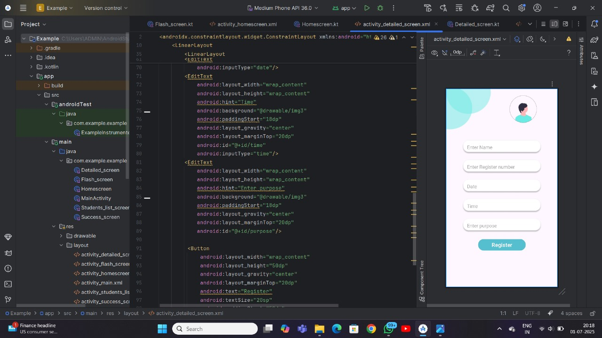
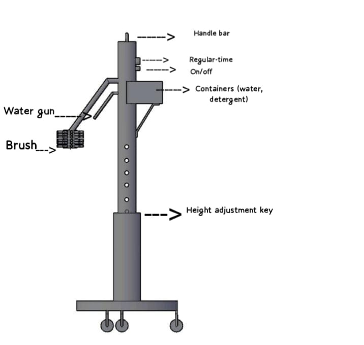
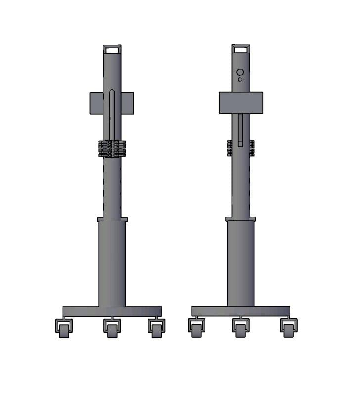
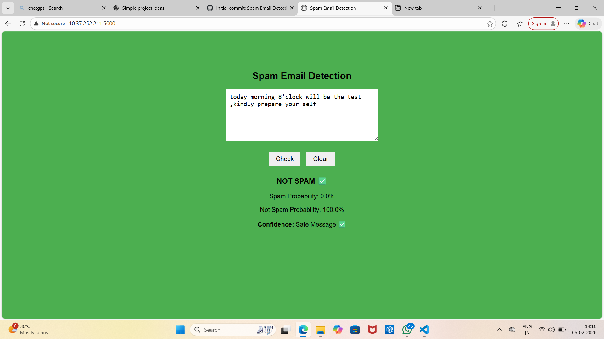
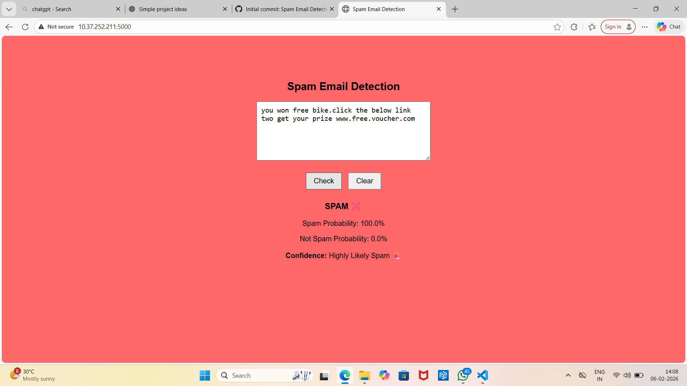

Hostel Management UI/UX App
This group project was developed during our internship period. The Android application is designed to securely manage and monitor hostel student movements in an efficient digital manner.
The system allows students to record their entry and exit by capturing essential details such as name, register number, date, time, and current location. A built-in camera verification feature ensures user authenticity before permitting data entry. All records are stored locally using SQLite and displayed in a structured list view for easy monitoring by hostel authorities.
This application enhances hostel security, minimizes manual record keeping, and enables real-time digital tracking of student movements.
Technologies Used
- Android Studio
- kotlin
- SQLite
- Camera API
- XML Layouts (ConstraintLayout, LinearLayout)
- ListView with Custom Adapter
Project Gallery



Automatic Sink Cleaner
Public restrooms often suffer from hygiene issues due to inconsistent cleaning schedules and high usage rates. Traditional cleaning methods for urinal sinks rely on manual labor, which can be inefficient,cleaning by hand is also expensive and they suffer from health issues,potential health risks for users also
We are going to invent a machine “The automatic sink cleaner”.
Project involves creating a portable machine equipped with a brush that automatically cleans urinal sinks at set intervals.
By using this machine instead of manual cleaning, we aim to improve hygiene and reduce the need for hand cleaning.
Making restroom maintenance more efficient and convenient.
Appreciation
Our project was recognized and appreciated, and we secured First Prize in the Invent Competition conducted by the Entrepreneurship Development Cell of CARE College of Engineering.
Project Gallery



Spam Email Detection Web App
About
Developed a Machine Learning-based Spam Email Detection Web Application using Python, Flask, and scikit-learn.
The app predicts whether an email is Spam or Not Spam, shows spam & not-spam probabilities, and provides confidence level.
Project Gallery



View on GitHub